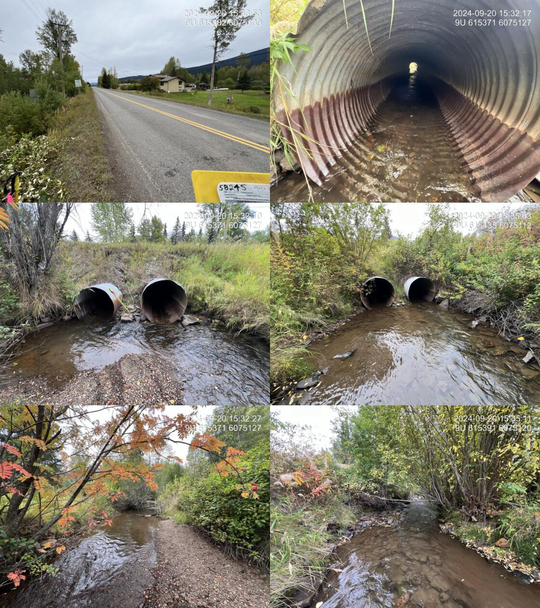
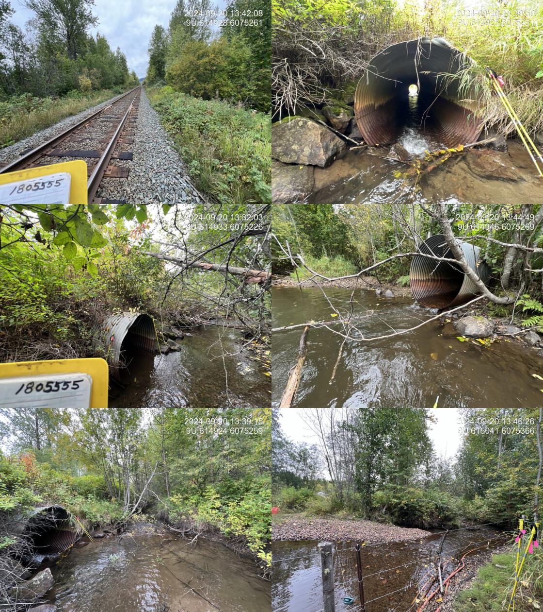
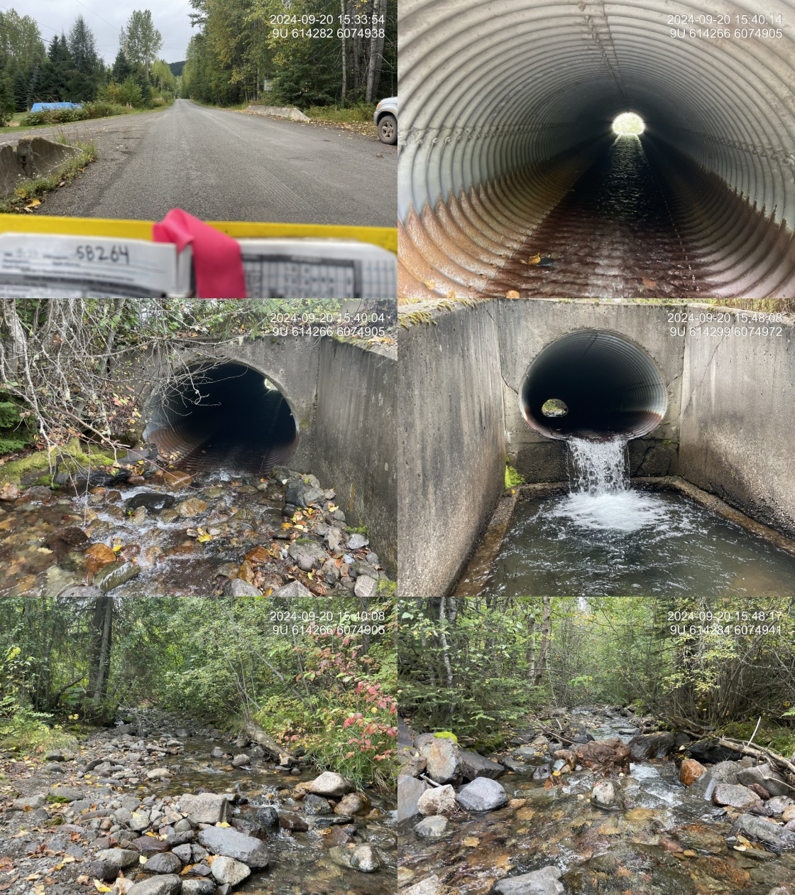

Simpson Creek - 58245 & 203122 & 58264 - Appendix
Site Location
PSCIS crossings 58245, 203122, and 58264 are located on Simpson Creek, approximately 3km northwest of Smithers, BC. Within the BC Freshwater Atlas, the stream is incorrectly mapped at multiple locations including immediately adjacent to Kathlyn Creek as well as the entire section of stream between the CN Railway line to approximately 300m upstream of Neilson Road (Figure . Simpson Creek flows into Kathlyn Creek, which joins the Bulkley River approximalety 4km downstream. PSCIS crossing 58245 is located 70m upstream of the confluence of Simpson Creek and Kathlyn Creek, on Lake Kathlyn Road. Approximately 530 m upstream, crossing 203122 is located on and is the responsibility of the Canadian National Railway. A further 950m upstream, crossing 58264 is located on Nielson Road. The Lake Kathlyn Road and Nielson Road crossings are the responsibility of the Ministry of Transportation and Infrastructure and all crossing are within the Bulkley River watershed group.
Figure 5.21: Map of Simpson Creek
Background
At PSCIS crossing 58245, Simpson Creek is a third order stream and drains a high elevation watershed of approximately 13.1km2. The watershed ranges in elevation from a maximum of 2477m to 503m near the lower crossing (Table 5.17). Simpson Creek is a major contributor to the greater Kathlyn Creek watershed, with flow volumes during the 2024 assessment slightly less than the Kathlyn Creek mainstem.
In 2012, PSCIS crossings 58245 and 58264 were assessed with fish passage assessments by Marlim Ecological Consulting Ltd. and both were ranked as barriers (MarLim Ecological Consulting Ltd. 2013).
A. Gottesfeld and Rabnett (2007) report that Simpson Creek has been a spawning location for coho salmon from the Kathln Creek system, noting that since 1986, coho have been transplanted into the Kathlyn Creek system from the Toboggan Creek Hatchery (A. Gottesfeld and Rabnett 2007). Kathlyn Creek also supports a small population of pink salmon, and steelhead are known to inhabit Kathlyn Lake and spawn upstream of the Chicken Creek confluence, which would include areas near the Simpson Creek confluence (A. Gottesfeld and Rabnett 2007). Adjacent to the crossing on Nielson Road (58264), coho salmon, cutthroat trout, rainbow trout, steelhead, mountain whitefish, and Dolly Varden have been documented in the past (Norris [2018] 2024; MoE 2024a). A landowner adjacent to the stream reported observing steelhead and coho spawning within the last decade and chinook spawning historically near their property located approximately 360 m downstream of Nielson Road.
According to a nearby landowner, the crossing on Nielson Road (58264) was originally a bridge but was replaced with the current culvert during an emergency flood event in the 1990s. Materials from the flood were used to construct dikes upstream and downstream of the crossing, which remained in place at the time of the 2024 assessment. Upstream of the Nielson Road crossing, a trail runs parallel to the stream for 400m up to the power line, offering an excellent opportunity for community engagement. By connecting people to the land, the trail can foster stewardship and advocacy for the stream, potentially leading to future restoration efforts.
fpr::fpr_table_wshd_sum(site_id = my_site) |>
fpr::fpr_kable(caption_text = paste0('Summary of derived upstream watershed statistics for PSCIS crossing ', my_site, '.'),
footnote_text = 'Elev P60 = Elevation at which 60% of the watershed area is above',
scroll = F)| Site | Area Km | Elev Site | Elev Min | Elev Max | Elev Median | Elev P60 | Aspect |
|---|---|---|---|---|---|---|---|
| 58245 | 13.1 | 503 | 495 | 2477 | 1311 | 1068 | E |
| * Elev P60 = Elevation at which 60% of the watershed area is above |
Habitat modelling outputs from bcfishpass indicated 1.6km of steelhead and 1.4km of coho rearing habitat upstream of crossing 58245 on Lake Kathlyn Road (gradients <8.5% for steelhead and <5.5% for coho). Upstream of the crossing on Nielson Road, only 100m of habitat is modelled for steelhead and coho rearing due to a steeper stream gradient exceeding 8.5%. Outputs are presented in Table
5.18). A map of the watershed is provided in
map attachment
093L.122.
| Habitat | Potential | Remediation Gain | Remediation Gain (%) |
|---|---|---|---|
| ST Network (km) | 5.4 | 0 | 0 |
| ST Lake Reservoir (ha) | 0.6 | 0 | 0 |
| ST Wetland (ha) | 0.0 | 0 | – |
| ST Slopeclass03 Waterbodies (km) | 0.1 | 0 | 0 |
| ST Slopeclass03 (km) | 2.5 | 0 | 0 |
| ST Slopeclass05 (km) | 0.4 | 0 | 0 |
| ST Slopeclass08 (km) | 0.8 | 0 | 0 |
| ST Spawning (km) | 1.5 | 0 | 0 |
| ST Rearing (km) | 2.0 | 0 | 0 |
| CH Spawning (km) | 1.4 | 0 | 0 |
| CH Rearing (km) | 1.4 | 0 | 0 |
| CO Spawning (km) | 1.5 | 0 | 0 |
| CO Rearing (km) | 1.4 | 0 | 0 |
| CO Rearing (ha) | 0.0 | 0 | – |
| SK Spawning (km) | 0.0 | 0 | – |
| SK Rearing (km) | 0.0 | 0 | – |
| SK Rearing (ha) | 0.0 | 0 | – |
| * Model data is preliminary and subject to adjustments. |
Stream Characteristics at Crossings 58245, 203122, and 58264
At the time of the 2024 assessment, PSCIS crossing 58245 on Lake Kathlyn Road was un-embedded, non-backwatered and although it ranked as a barrier to upstream fish passage according to the provincial protocol, neither of the two culverts at this location had an outlet drop, therefore it is unlikely a barrier to fish passage (MoE 2011) (Table 5.19).
Approximately 530 m upstream of Lake Kathlyn Road, PSCIS crossing 203122 on the CN Railway was un-embedded, non-backwatered and ranked as a barrier to upstream fish passage according to the provincial protocol (MoE 2011) (Table 5.20). The two culverts were roughly 30 m apart, the southern pipe was dry and fully embedded, while the northern pipe was currently conveying the main flow of Simpson Creek.
A further 950m upstream, PSCIS crossing 58264 on Nielson Road was un-embedded, non-backwatered and ranked as a barrier to upstream fish passage according to the provincial protocol (MoE 2011) (Table 5.21). This concrete oval culvert had a significant 1 m outlet drop and 1.2 m deep outlet pool.
At all crossings, the water temperature was 6.1\(^\circ\)C, pH was 7.7 and conductivity was 107 uS/cm.
| Location and Stream Data |
|
Crossing Characteristics | – |
|---|---|---|---|
| Date | 2024-09-20 | Crossing Sub Type | Round Culvert |
| PSCIS ID | 58245 | Diameter (m) | 2.5 |
| External ID | – | Length (m) | 20 |
| Crew | AI | Embedded | No |
| UTM Zone | 9 | Depth Embedded (m) | – |
| Easting | 615383 | Resemble Channel | – |
| Northing | 6075125 | Backwatered | No |
| Stream | Simpson Creek | Percent Backwatered | – |
| Road | Lake Kathlyn Road | Fill Depth (m) | 2.2 |
| Road Tenure | MoTi | Outlet Drop (m) | 0 |
| Channel Width (m) | 7 | Outlet Pool Depth (m) | 0.3 |
| Stream Slope (%) | 1.5 | Inlet Drop | No |
| Beaver Activity | Yes | Slope (%) | 2 |
| Habitat Value | High | Valley Fill | Deep Fill |
| Final score | 24 | Barrier Result | Barrier |
| Fix type | Replace with New Open Bottom Structure | Fix Span / Diameter | 15 |
| Photos: From top left clockwise: Road/Site Card, Barrel, Outlet, Downstream, Upstream, Inlet. | |||
| Comments: Two 1.25 m pipes are present and are heavily corroded. Upstream and downstream, the streambanks are heavily modified adjacent to private land, including riparian vegetation removal, stream channelization, and bank armouring. High-value steelhead, coho, and chinook spawning habitat is documented further upstream above the railway crossing. MoTi chris_culvert_id: 1514706, 1514705 |
# fpr::fpr_table_cv_summary_memo(site = my_site3, site_photo_id = my_site3)
# See issue https://github.com/NewGraphEnvironment/mybookdown-template/issues/65
lfpr_table_cv_summary_memo(site = my_site3, site_photo_id = my_site3)| Location and Stream Data |
|
Crossing Characteristics | – |
|---|---|---|---|
| Date | 2024-09-20 | Crossing Sub Type | Round Culvert |
| PSCIS ID | 203122 | Diameter (m) | 3 |
| External ID | – | Length (m) | 25 |
| Crew | AI | Embedded | No |
| UTM Zone | 9 | Depth Embedded (m) | – |
| Easting | 614941 | Resemble Channel | Yes |
| Northing | 6075232 | Backwatered | No |
| Stream | Simpson Creek | Percent Backwatered | – |
| Road | Railway | Fill Depth (m) | 1 |
| Road Tenure | CN Rail | Outlet Drop (m) | 0.05 |
| Channel Width (m) | 5 | Outlet Pool Depth (m) | 0.9 |
| Stream Slope (%) | 1 | Inlet Drop | Yes |
| Beaver Activity | Yes | Slope (%) | 2 |
| Habitat Value | High | Valley Fill | Deep Fill |
| Final score | 24 | Barrier Result | Barrier |
| Fix type | Replace with New Open Bottom Structure | Fix Span / Diameter | 15 |
| Comments: Although this culvert is on Simpson Creek, it is not currently conveying the main flow and remains mostly dry. Two 1.5 m diameter pipes run under the railway, approximately 30 m apart. The southern pipe is fully embedded with an average embedment depth of 25 cm, while the northern pipe is currently passing all stream flow. This is a high-value stream with extensive gravel areas suitable for steelhead, coho, and chinook salmon spawning upstream. The adjacent landowner has reported recent observations of steelhead spawning and has historical knowledge of chinook spawning approximately 300 m downstream from Nielsen Road. | |||
| Photos: From top left clockwise: Road/Site Card, Barrel, Outlet, Downstream, Upstream, Inlet. | |||
|  |
# fpr::fpr_table_cv_summary_memo(site = my_site2, site_photo_id = my_site2)
# See issue https://github.com/NewGraphEnvironment/mybookdown-template/issues/65
lfpr_table_cv_summary_memo(site = my_site2, site_photo_id = my_site2)| Location and Stream Data |
|
Crossing Characteristics | – |
|---|---|---|---|
| Date | 2024-09-20 | Crossing Sub Type | Oval Culvert |
| PSCIS ID | 58264 | Diameter (m) | 2.4 |
| External ID | – | Length (m) | 23 |
| Crew | LS TP | Embedded | No |
| UTM Zone | 9 | Depth Embedded (m) | – |
| Easting | 614280 | Resemble Channel | – |
| Northing | 6074951 | Backwatered | No |
| Stream | Simpson Creek | Percent Backwatered | – |
| Road | Nielson Road | Fill Depth (m) | 0.4 |
| Road Tenure | MoTi | Outlet Drop (m) | 1 |
| Channel Width (m) | 5.6 | Outlet Pool Depth (m) | 1.2 |
| Stream Slope (%) | 13 | Inlet Drop | No |
| Beaver Activity | No | Slope (%) | 5 |
| Habitat Value | High | Valley Fill | Deep Fill |
| Final score | 39 | Barrier Result | Barrier |
| Fix type | Replace with New Open Bottom Structure | Fix Span / Diameter | 15 |
| Comments: This concrete oval culvert has a significant 1 m outlet drop, likely inhibiting fish passage. The stream is incorrectly mapped in the Freshwater Atlas, located south of the mapped channel. Upstream habitat includes boulder cover, gravel pockets suitable for coho, steelhead, and Dolly Varden spawning, and a healthy mature mixed forest riparian zone. Downstream habitat transitions to lower-gradient, high-value conditions with extensive gravels, deep pools (up to 90 cm), large woody debris, and abundant cover, supporting recent steelhead and historically chinook spawning, as reported by the adjacent landowner. Habitat confirmations were completed at this site and all downstream crossings to the confluence with Kathlyn Creek. The stream is a major contributor to the greater Kathlyn Creek watershed, with flow volumes during the assessment slightly less than the Kathlyn Creek mainstem. Electrofishing upstream of Nielsen Road captured rainbow trout, while downstream sampling confirmed the presence of Dolly Varden, rainbow trout, cutthroat trout/rainbow trout hybrids, and coho. The coho were captured approximately 350 m downstream of Nielsen Road. According to the landowner, this crossing was originally a bridge but was replaced with the current culvert during an emergency flood event in the 1990s. | |||
| Photos: From top left clockwise: Road/Site Card, Barrel, Outlet, Downstream, Upstream, Inlet. | |||
|  |
Stream Characteristics Downstream of Crossing 58245
The stream was surveyed downstream from crossing 58245 for 70m , to the confluence with Kathlyn Creek. The stream ran adjacent to the road along one bank, which had limited riparian vegetation consisting primarily of shrubs. The opposite bank, bordered by private property, had minimal vegetation and no significant riparian cover. Multiple sections of bank armouring and channelization were observed near the private property, and only small pockets of gravels suitable for spawning were observed (Figure 5.23). The average channel width was 6.2m, the average wetted width was 3.9m, and the average gradient was 2%.Total cover amount was rated as moderate with undercut banks dominant. Cover was also present as small woody debris, deep pools, and overhanging vegetation.The dominant substrate was fines with cobbles sub-dominant. The habitat was rated as medium value for salmonid rearing and spawning.
Stream Characteristics Upstream of Crossing 58245 and Downstream of Crossing 203122
The stream was surveyed from Lake Kathlyn Road (crossing 58245) to the CN railway (crossing 203122), a distance of approximately 650m. Above Lake Kathlyn Road, the stream was heavily impacted by adjacent private lands, with riparian vegetation removed, the stream channelized, and banks armoured (Figure 5.24). Extensive beaver activity was observed in the lower stream, with dams ranging in height from 0.4 to 1 m. Nearing the railway crossing, the stream consisted of mostly intact riparian vegetation, abundant gravels, deep pools, and large woody debris. The average channel width was 6m, the average wetted width was 4.3m, and the average gradient was 1.1%.The dominant substrate was fines with gravels sub-dominant.Total cover amount was rated as moderate with undercut banks dominant. Cover was also present as small woody debris, large woody debris, deep pools, and overhanging vegetation. The habitat was rated as high value for salmonid spawning and rearing.
PSCIS crossing 203126, situated approximately 70m upstream of Lake Kathlyn Road, was also assessed during the survey, with the culvert assessment provided in Appendix - Phase 1 Fish Passage Assessment Data and Photos. The crossing consisted of three 0.95m pipes running beneath a private driveway, with two pipes appearing fully embedded. The crossing was non-backwatered and ranked as a barrier to upstream fish passage according to the provincial protocol (MoE 2011). Evidence of beaver activity was observed including debris accumulation at the inlet, and the landowner reported previous blockages caused by beavers, which required periodic inlet clearing and the removal of significant accumulated material through dredging.
Stream Characteristics Upstream of Crossing 203122 and Downstream of Crossing 58264
The stream was surveyed from the CN railway (crossing 203122) to Nielson Road (crossing 58264), a distance of approximately 950m (Figure 5.25). From the railway crossing upstream, the gradient was low (2–3%), with high-quality habitat characterized by abundant gravels, deep pools up to 90cm, large woody debris, and diverse cover. In this section, the adjacent landowner reported recent steelhead and coho spawning, as well as historical Chinook spawning. Approximately 300m downstream of Nielson Road, the gradient increased (5–6%), transitioning into straight riffle-cascade sections with confined, channelized, dyke-like banks. Total cover amount was rated as moderate with deep pools dominant. Cover was also present as small woody debris, large woody debris, undercut banks, and overhanging vegetation.The average channel width was 6.2m, the average wetted width was 3.5m, and the average gradient was 4.1%.The dominant substrate was gravels with cobbles sub-dominant. The habitat was rated as high value for salmonid spawning and rearing.
Stream Characteristics Upstream of Crossing 58264
The stream was surveyed upstream from crossing 58264 for 615m . This section of the stream featured a steeper gradient, predominantly characterized by boulder cover with occasional pockets of gravels suitable for coho, steelhead, and Dolly Varden spawning (Figure 5.26). Pools were infrequent throughout. The riparian zone was composed of a healthy, mature mixed forest, providing stability and shading. The upper end of the site was situated just upstream of a short cascade with a 20% gradient. The habitat was rated as medium value for salmonid rearing an spawning. The average channel width was 8.9m, the average wetted width was 4.7m, and the average gradient was 7.3%.The dominant substrate was cobbles with boulders sub-dominant.Total cover amount was rated as moderate with boulders dominant. Cover was also present as large woody debris.
Fish Sampling
Electrofishing was conducted upstream and downstream of crossing (58264) with results summarised in Tables 5.23 - 5.24 and Figure 5.22. A total of 20 fish were captured downstream including rainbow trout, cutthroat trout/rainbow trout hybrid, and Dolly Varden. Upstream of the crossing 12 rainbow trout were captured (Figure 5.27). .
Electrofishing was conducted at one site approximately 360 m downstream of Nielsen Road, with results summarised in Tables 5.23 - 5.24 and Figure 5.22. At this location, the adjacent landowner had reported recent steelhead and coho spawning and historically Chinook spawning. A total of 43 fish were captured including coho salmon, cutthroat trout/rainbow trout hybrid, and Dolly Varden (Figure 5.28).
Structure Remediation and Cost Estimate
Should restoration/maintenance activities proceed, replacement of the Nielson Road crossing (58264) with a bridge (15 m span) is recommended. The significant 1 m outlet drop at this crossing, combined with the presence of salmonids in the system, makes it a top priority for remediation. At the time of reporting in 2025, the cost of the work is estimated at $ 3,000,000.
PSCIS crossing 203122 on the CN Railway presented a minimal barrier to fish passage and is considered a low priority for replacement. However, if restoration activities are undertaken, replacing the existing structure with a bridge spanning 15 m is recommended. As of 2025, the estimated replacement cost is $ 11,250,000, with the high cost attributed to the complexities of working within a railway corridor.
At the time of assessment, the downstream crossing on Lake Kathlyn Road was unlikely a barrier to fish passage. However, should restoration activities proceed, replacement with a bridge spanning 15 m is recommended. At the time of reporting in 2025, the estimated cost for the replacement is $ 3,000,000.
Conclusion
Simpson Creek is a significant contributor to the Kathlyn Creek watershed, with flow volumes during the 2024 assessment slightly less than those observed in the Kathlyn Creek mainstem. The habitat was rated as value for salmonid spawning and rearing. Simpson Creek has historically supported a variety of salmonids, and coho captured during electrofishing at the time of assessment further confirm the stream’s continued importance as salmonid habitat. PSCIS crossing 58264 on Nielsen Road is a strong candidate for remediation, given its large outlet drop (1m) and low traffic volume, it is a high priority for replacement. Upstream of this crossing, a trail runs alongside the stream offering opportunities for community engagement and education, which could foster stewardship and advocacy for the stream. PSCIS crossing 203122 on the CN Railway presented a minimal barrier at the time of assessment and was considered a low priority for replacement. However, if restoration activities proceed at the upstream crossing on Nielsen Road, this crossing should be reassessed. PSCIS crossing 58245 on Lake Kathlyn Road is not presumed to be a significant barrier to fish passage and was rated as a low priority for replacement. However, the culverts were heavily corroded and located in an area impacted by riparian vegetation removal, stream channelization, and bank armouring, which presents a valuable opportunity for community-led restoration efforts and education. The proximity of these sites to Smithers, BC, enhances opportunities for public involvement and education, further supporting long-term restoration goals for Simpson Creek.
tab_hab_summary |>
dplyr::filter(Site %in% c(my_site, my_site2)) |>
fpr::fpr_kable(caption_text = paste0("Summary of habitat details for PSCIS crossings ", my_site, " and ", my_site2, "."),
scroll = F) | Site | Location | Length Surveyed (m) | Average Channel Width (m) | Average Wetted Width (m) | Average Pool Depth (m) | Average Gradient (%) | Total Cover | Habitat Value |
|---|---|---|---|---|---|---|---|---|
| 58245 | Downstream | 70 | 6.2 | 3.9 | 0.3 | 2.0 | moderate | medium |
| 58245 | Upstream | 1000 | 6.0 | 4.3 | 0.7 | 1.1 | moderate | high |
| 58264 | Upstream | 615 | 8.9 | 4.7 | 0.3 | 7.3 | moderate | medium |
| site | passes | ef_length_m | ef_width_m | area_m2 | enclosure |
|---|---|---|---|---|---|
| 58264_ds_ef1 | 1 | 25 | 3.3 | 82.5 | partial enclosure |
| 58264_ds_ef2 | 1 | 30 | 2.7 | 81.0 | partial enclosure |
| 58264_us_ef1 | 1 | 32 | 3.5 | 112.0 | partial enclosure |
| local_name | species_code | life_stage | catch | density_100m2 | nfc_pass |
|---|---|---|---|---|---|
| 58264_ds_ef1 | Cutthroat Trout /Rainbow Trout hybrid | parr | 2 | 2.4 | FALSE |
| 58264_ds_ef1 | Dolly Varden | juvenile | 2 | 2.4 | FALSE |
| 58264_ds_ef1 | Dolly Varden | parr | 1 | 1.2 | FALSE |
| 58264_ds_ef1 | Rainbow Trout | parr | 15 | 18.2 | FALSE |
| 58264_ds_ef2 | Coho Salmon | fry | 3 | 3.7 | FALSE |
| 58264_ds_ef2 | Coho Salmon | parr | 1 | 1.2 | FALSE |
| 58264_ds_ef2 | Cutthroat Trout /Rainbow Trout hybrid | parr | 5 | 6.2 | FALSE |
| 58264_ds_ef2 | Dolly Varden | fry | 1 | 1.2 | FALSE |
| 58264_ds_ef2 | Rainbow Trout | fry | 20 | 24.7 | FALSE |
| 58264_ds_ef2 | Rainbow Trout | parr | 13 | 16.0 | FALSE |
| 58264_us_ef1 | Rainbow Trout | fry | 1 | 0.9 | FALSE |
| 58264_us_ef1 | Rainbow Trout | parr | 11 | 9.8 | FALSE |
|
* nfc_pass FALSE means fish were captured in final pass indicating more fish of this species/lifestage may have remained in site. Mark-recaptured required to reduce uncertainties. |
my_caption <- paste0('Densites of fish (fish/100m2) captured upstream and downstream of PSCIS crossing ', my_site2, '.')
fpr::fpr_plot_fish_box(sit = my_site2) Figure 5.22: Densites of fish (fish/100m2) captured upstream and downstream of PSCIS crossing 58264.
my_photo1 = fpr::fpr_photo_pull_by_str(str_to_pull = 'ds_typical_1_')
my_caption1 = paste0('Typical habitat downstream of PSCIS crossing ', my_site, '.')Figure 5.23: Typical habitat downstream of PSCIS crossing 58245.
my_photo2 = fpr::fpr_photo_pull_by_str(str_to_pull = 'us_typical_2')
my_caption2 = paste0('Typical habitat upstream of PSCIS crossing ', my_site, ' and downstream of PSCIS crossing ', my_site3, ', with signs of bank armouring and channelization.')Figure 5.24: Typical habitat upstream of PSCIS crossing 58245 and downstream of PSCIS crossing 203122, with signs of bank armouring and channelization.
my_caption <- paste0('Left: ', my_caption1, ' Right: ', my_caption2)
knitr::include_graphics(my_photo1)
knitr::include_graphics("fig/pixel.png")
knitr::include_graphics(my_photo2)my_photo1 = fpr::fpr_photo_pull_by_str(site = my_site2, str_to_pull = "stspawninglocation")
my_caption1 = paste0('Steelhead spawning location upstream of PSCIS crossing ', my_site3, ' and downstream of PSCIS crossing ', my_site2, ', as reported by the adjacent landowner.')Figure 5.25: Steelhead spawning location upstream of PSCIS crossing 203122 and downstream of PSCIS crossing 58264, as reported by the adjacent landowner.
my_photo2 = fpr::fpr_photo_pull_by_str(site = my_site2, str_to_pull = 'us_typical_1')
my_caption2 = paste0('Typical habitat upstream of PSCIS crossing ', my_site2, '.')Figure 5.26: Typical habitat upstream of PSCIS crossing 58264.
my_caption <- paste0('Left: ', my_caption1, ' Right: ', my_caption2)
knitr::include_graphics(my_photo1)
knitr::include_graphics("fig/pixel.png")
knitr::include_graphics(my_photo2)my_photo1 = fpr::fpr_photo_pull_by_str(site = my_site2, str_to_pull = 'fish_1')
my_caption1 = paste0('Rainbow trout captured downstream of crossing ', my_site2, '.')Figure 5.27: Rainbow trout captured downstream of crossing 58264.
my_photo2 = fpr::fpr_photo_pull_by_str(site = my_site2, str_to_pull = 'fish_2')
my_caption2 = paste0('Coho salmon captured approximately 360 m downstream of crossing ', my_site2, '.')Figure 5.28: Coho salmon captured approximately 360 m downstream of crossing 58264.